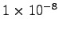

![[*]](footnote.gif) or
NLEQ2
or FINTSLV (a forward integration algorithm). By default PySCeS
has `solver fallback' enabled which means that if a solver fails
or returns an invalid result (i.e. contains negative
concentrations) it switches to the next available solver. The
solver chain is as follows:
or
NLEQ2
or FINTSLV (a forward integration algorithm). By default PySCeS
has `solver fallback' enabled which means that if a solver fails
or returns an invalid result (i.e. contains negative
concentrations) it switches to the next available solver. The
solver chain is as follows:
mod.mode_solver_fallback = 0. Each of the three solvers is
highly configurable and although the default settings should work
for most models a full description of all solver options can be
found in the PySCeS Reference Manual.
To calculate a steady state use the mod.doState() method:
>>> mod.doState() (hybrd) The solution converged. INFO: Steady State evaluation complete.The results of a steady-state evaluation are attached as arrays as well as individual attributes and can be easily displayed using the mod.showState() method:
mod.J_R2, which represents it's steady-state value, is created.
mod.s2_ss
mod.state_species in mod.species
order.
mod.state_flux in mod.reactions order.
mod.mode_state_init initialises the solver using either
the initial values (0), a value close to zero (1) or a quick
simulation (2). Default behaviour is to use the initial values.
mod.zero_val is the value used that is close to zero, the default is
